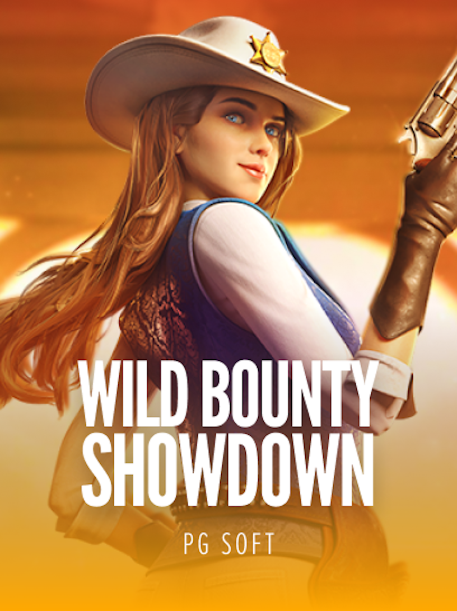
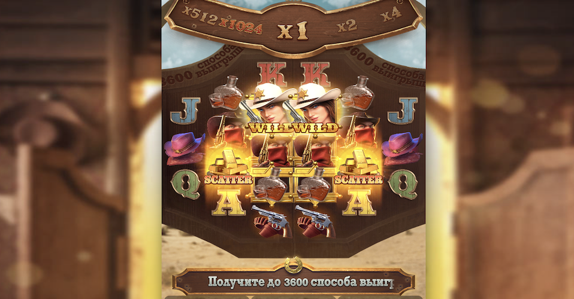

Фриспины
Три и более скаттера запускают бесплатные вращения — основной источник крупных выигрышей в Wild Bounty Showdown.

PG Soft · Дикий Запад
Wild Bounty Showdown (Вилд Баунти Шоудаун) — слот про охотницу за головами на Диком Западе. RTP 96.71%, высокая волатильность, максимум ×5 000, фриспины с растущими множителями и покупка бонуса. Ниже — обзор, демо и где играть на деньги.
Wild Bounty Showdown — игровой автомат от PG Soft в антураже Дикого Запада: салуны, револьверы и рыжеволосая охотница за головами в главной роли. Слот идёт на каскадных барабанах (раскладка 3-4-5-5-4-3 с расширением, до 3600 способов выплат), а всю добычу приносит бонусный раунд с фриспинами.
За счёт высокой волатильности игра выдаёт редкие, но крупные заносы — именно поэтому «вилд баунти шоудаун» так часто ищут вместе со словами «занос» и «покупка бонусов». Играть можно в демо на виртуальные монеты или на деньги в рублях — правила одинаковы, разница лишь в том, выводятся ли выигрыши.

Выигрыши в Wild Bounty Showdown собираются из совпадений одинаковых символов по способам выплат (до 3600). Чем дороже символ и чем больше их на поле — тем крупнее выплата. Символы делятся на премиум-, младшие и специальные.
Точные коэффициенты выплат зависят от размера ставки и отображаются в таблице выплат прямо в игре.
Запустить слот на реальные деньги в рублях можно за три шага — от регистрации до первого спина.
Создайте аккаунт в казино со слотами PG Soft — займёт пару минут.
Внесите депозит удобным способом и активируйте приветственный бонус.
Найдите Wild Bounty Showdown в каталоге и играйте на реальные деньги.
Три и более скаттера запускают бесплатные вращения — основной источник крупных выигрышей в Wild Bounty Showdown.
В бонусе множитель увеличивается с каждой удачной комбинацией и не сбрасывается до конца раунда — так собираются заносы ×5 000.
Wild-символы остаются на поле во фриспинах, повышая шанс на выплату и работу множителя.
За фиксированную ставку можно сразу купить фриспины и не ждать скаттеры. Опция активна только в игре на деньги.
Запустите демо Wild Bounty Showdown на виртуальные монеты — без депозита и регистрации. В демо доступны все фичи, включая фриспины и покупку бонуса, чтобы оценить механику и волатильность перед игрой в рублях. Выигрыши в демо не выводятся.
Каскады, растущий множитель и ×5000 за 16 секунд
Демо-режим запускается на площадке без депозита: те же фриспины, растущий множитель и покупка бонуса. На реальном счёте выигрыш выводится в рублях.
До ×5000 от ставки
Такой занос может быть вашимТе же фриспины с растущим множителем и покупка бонуса, только выигрыш выводится в рублях. Новым игрокам — фриспины на старт.
Играть на деньгиЗаявленный RTP — 96.71%, волатильность высокая. Это средний по рынку показатель отдачи, который на дистанции определяет долю возвращаемых ставок.
Демо Wild Bounty Showdown запускается на виртуальные монеты без депозита и регистрации — кнопка «Играть демо». Механика та же, что на деньги, но выигрыши не выводятся.
Зарегистрируйтесь в казино со слотами PG Soft, пополните счёт и запустите слот в режиме реальной игры. Ставки и вывод — в рублях. Ссылки на игру — в кнопках «Играть на деньги».
Да, доступна покупка бонуса (Buy Feature): за фиксированную ставку сразу запускаются фриспины с множителями. Работает только в игре на деньги.
Максимум — ×5 000 от ставки. Крупные заносы приходят во фриспинах за счёт растущих множителей и липких wild-символов.
Самые высокооплачиваемые — премиум-символы: охотница за головами и бандит в маске. Далее идут ковбойские шляпы и фляга виски, а самые дешёвые — карты A, K, Q, J. Отдельно работают Wild (замена символов) и Scatter-золото, запускающее фриспины.
Да, слот адаптирован под мобильные — Android и iOS. Играть можно прямо в браузере телефона, без установки приложений; демо и игра на деньги доступны так же, как на ПК.
Покупка бонуса (Buy Feature) сразу запускает фриспины и экономит время ожидания скаттеров, но стоит в разы дороже обычной ставки и не гарантирует выигрыш. При высокой волатильности слота это осмысленно только с достаточным запасом банка.
Фриспины начисляются после регистрации — активация за минуту, отыгрыш и вывод в рублях. Количество бонусов ограничено.
Забрать фриспины